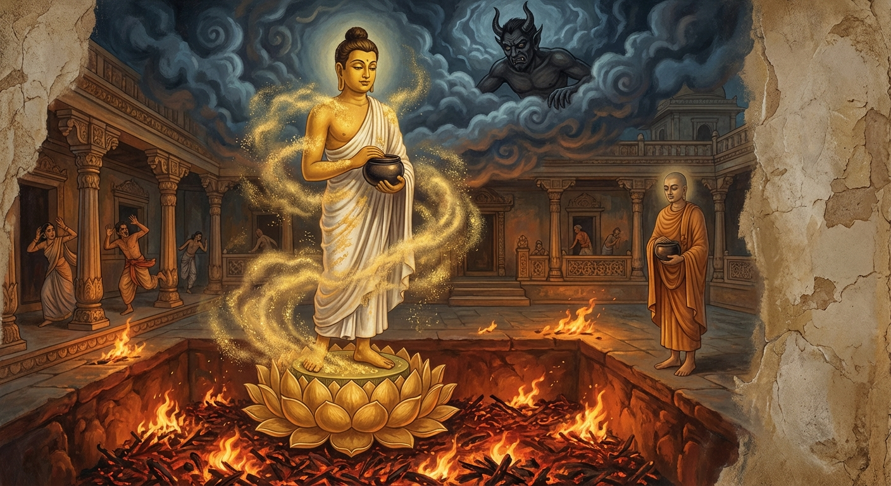

10. ඛදිරංගාර ජාතකය (40)
“කාමං පතාමි නිරයං” යන මේ ජාතක කතාව බුදුරජාණන් වහන්සේ ජේතවනාරාමයේ වැඩ වසන සමයෙහි අනේපිඬු මහ සිටුතුමා අරබයා වදාළ සේක. ඒ සිටුතුමා ජේතවන විහාරය වෙනුවෙන් පනස් හාර කෝටියක ධනයක් බුදුසසුනට පරිත්යාග කර, ධනය විසිරුවා, තෙරුවන් හැර වෙනත් රත්නයක් ගැන සිතක්වත් නූපදවා, බුදුරජාණන් වහන්සේ ජේතවනයේ වැඩ වසන කල්හි දිනපතා මහ උවටැන් තුනක් සඳහා යයි. උදෑසනම එක් වරක් යයි. දිවා ආහාරයෙන් පසු එක් වරක් ද, සවස් භාගයේ එක් වරක් ද යයි. අතරමැද වේලාවන්හි ද උවටැන් සඳහා යයි. එසේ යන විට “අපගේ සීයා හෝ පියා කුමක් ගෙනාවේ දැයි” කියා ළදරු සාමණේරවරුන් අත බලන විට හිස් අතින් නොයා යුතු යැයි සිතා, උදෑසන යන විට කැඳ ගෙන්වාගෙන යයි. දිවා ආහාරයෙන් පසු යන විට ගිතෙල්, වෙඬරු, මීපැණි, උක් සකුරු ආදිය ද, සවස් භාගයේ සුවඳ මල් හා වස්ත්ර ආදිය ද අතැතිව යයි. මෙසේ දිනපතා පරිත්යාග කරන ඔහුගේ දානයෙහි ප්රමාණයක් නොවීය.
වෙළෙඳාම ජීවිකාව කරගත් බොහෝ දෙනෙක් ඔහුගෙන් ණයට භාණ්ඩ ගෙන අටළොස් කෝටියක ණය ගත්හ; මහා සිටුවරයා ඒවා නැවත ගෙන්වා නොගත්තේය. ඔහුගේ පවුලට අයත් තවත් අටළොස් කෝටියක ධනයක් ගං ඉවුරේ නිදන් කර තිබියදී, අචිරවතී නදියේ ඉවුර බිඳී යාමෙන් මහා මුහුදට ගසාගෙන ගියේය. ඒවා ලෝහ සැලිවල බහා පියන් වසා තිබූ බැවින් එසේම මුහුදු පතුලේ පෙරළෙමින් පවතී. ඔහුගේ නිවසේ පන්සියයක් භික්ෂූන් වහන්සේලාට නිතිපතා දානය පිරිනැමේ. සිටුතුමාගේ නිවස සිව්මංසලක කැණූ පොකුණක් මෙන් භික්ෂූන් වහන්සේලාට විවෘත වූ අතර, සියලු භික්ෂූන් වහන්සේලාට මව්පියන් වැනි විය. මේ නිසා බුදුරජාණන් වහන්සේ ද, අසූ මහා ශ්රාවකයන් වහන්සේලා ද ඔහුගේ නිවසට වඩිති. වඩිනා සෙසු භික්ෂූන් වහන්සේලාගේ ද ප්රමාණයක් නැත. ඒ සිටු මැදුර සත් මහල් ය; දොරටු සතකින් යුක්ත ය. එහි සතරවන දොරටුවේ එක්තරා මිසදිටු දේවතාවියක් වසයි. බුදුරජාණන් වහන්සේ නිවසට ඇතුළු වන විට ඇයට තම විමනේ සිටිය නොහැක; දරුවන් ද රැගෙන බිමට බැස සිටියි. අසූ මහා ශ්රාවකයන් වහන්සේලා ඇතුළු සෙසු භික්ෂූන් වහන්සේලා ඇතුළු වන විට ද පිටව යන විට ද ඇය එසේම කරයි. ඒ දේවතාවිය මෙසේ සිතුවාය: “ශ්රමණ ගෞතමයන් සහ ශ්රාවකයන් මේ ගෙට ඇතුළු වන විට මට සැපයක් නම් නැත. නිතරම බිමට බැස සිටීමට මට නොහැකිය. මොවුන් මේ ගෙට නොපැමිණෙන ලෙස මා විසින් යමක් කළ යුතුය.” ඉන්පසු දිනක් ඇය රාත්රියේ සිටුතුමාගේ ප්රධාන කළමනාකරු නිදා සිටියදී ඔහු වෙත ගොස් ආලෝකයක් පැතිරවූවාය. “මෙහි කවුද?” යැයි ඇසූ විට, “මම සිව්වන දොරටුවේ වසන දේවතාවිය” යැයි කීවාය. “කුමක් සඳහා පැමිණියෙහිද?” “නුඹලාට සිටුතුමාගේ ක්රියාවන් නොපෙනේද? තම අනාගතය ගැන නොබලා ධනය පිටතට ඇද ශ්රමණ ගෞතමයන්ටම පුදයි. වෙළඳාමක් නොකරයි; කර්මාන්ත ඇරඹීමක් නොකරයි. තමාගේ කර්මාන්ත දියුණු කරගන්නා ලෙසත්, ශ්රමණ ගෞතමයන් සහ ශ්රාවකයන් මේ ගෙට නොවඩින ලෙසත් සිටුතුමාට අවවාද කරනු.” එවිට ඔහු ඇයට මෙසේ කීවේය: “බාල දේවතාවිය, සිටුතුමා ධනය වියදම් කරන්නේ නිවන් මඟ හෙළි කරන බුදුසසුන වෙනුවෙනි. ඔහු මගේ කෙස් වැටියෙන් අල්ලා විකුණා දැමුවත් මම කිසිවක් නොකියමි. නුඹ යන්න.” ඇය නැවත දිනක සිටුතුමාගේ වැඩිමහල් පුතු වෙත ගොස් එලෙසම අවවාද කළාය. ඔහු ද පෙර පරිදිම ඇයට තර්ජනය කළේය. සිටුතුමා සමඟ ඍජුව කතා කිරීමට ඇයට ශක්තියක් නොතිබුණි.
මෙසේ නිරන්තරයෙන් දන් දීම නිසාත්, වෙළඳාම් නොකිරීම නිසාත්, ආදායම අඩු වී ධනය පිරිහී ගියේය. මෙසේ ක්රමයෙන් දිළිඳු බවට පත්වන විට සිටුතුමාගේ පරිභෝජනය කරන වස්ත්ර, යහන්, භෝජන ආදිය ද පෙර පරිදි නොවිණි. මෙසේ වුවද ඔහු භික්ෂු සංඝයාට දන් දෙයි; නමුත් ප්රණීත කොට දීමට නොහැකි විය. දිනක් බුදුරජාණන් වහන්සේ වැඳ එකත්පස්ව හුන් සිටුතුමාගෙන්, “ගෘහපතිය, ඔබගේ කුලයෙහි (නිවසෙහි) තවමත් දන් දෙනු ලැබේද?” යැයි විචාළ සේක. ඔහු, “ස්වාමීනි, දෙනු ලැබේ. නමුත් ඒ දානය කාඩි හොදි දෙවනුවට ඇති (ඉතා රළු වූ) නිවුඩු බත් ය” යැයි පැවසීය. එවිට බුදුරජාණන් වහන්සේ, “ගෘහපතිය, ‘මා දෙන්නේ රළු දානයක්’ යැයි සිතා සිත කුඩා කර නොගන්න. සිත පහන් වූ විට බුදු, පසේබුදු, මහරහතන් වහන්සේලාට දෙන දානය රළු නම් නොවේ. ඒ මන්ද? එහි විපාකය මහත් බැවිනි” යැයි වදාළ සේක. සිත ප්රණීත කරගත හැක්කහුට රළු දානයක් නම් නැතැයි යන මේ කරුණ මෙසේ දත යුතුය.
“සිත පහන් වූ කල්හි, තථාගත සම්බුදුරජාණන් වහන්සේට හෝ උන්වහන්සේගේ ශ්රාවකයන්ට හෝ දෙනු ලබන දක්ෂිණාව (දානය) සුළු යැයි කිව නොහැකිය.”
“උත්තම දෘෂ්ටි ඇති (නිවන දන්නා වූ) බුදුරජාණන් වහන්සේලා විෂයයෙහි කරන ලද උපස්ථානය ස්වල්ප නොවේ. ලුණු නැති, වියළි කුමු (පිට්ටු) පිඬක් දීමෙන් ලැබූ ඵලය දෙස බලන්න.”
තවදුරටත් බුදුරජාණන් වහන්සේ ඔහුට මෙසේ වදාළ සේක: “ගෘහපතිය, ඔබ මේ රළු ආහාරය හෝ දෙනු ලබන්නේ අෂ්ට ආර්ය පුද්ගලයන්ට ය. මම වේලාම බමුණුව උපන් කාලයේ මුළු දඹදිව රන් නගුලින් හා, සත්රුවන් දෙමින්, පස් මහා ගංගා එකම දිය දහරක් සේ ගලන්නාක් මෙන් මහා දන් පැවැත්වූ නමුත්, තෙරුවන් සරණ ගිය හෝ පන්සිල් රකින හෝ කිසිවකු නොලැබුවෙමි. දක්ෂිණාර්හ පුද්ගලයෝ එතරම් දුර්ලභ ය. එම නිසා ‘මා දෙන්නේ රළු දානයක්’ යැයි සිතා පසුබට නොවන්න” යැයි වදාරා වේලාම සූත්රය දේශනා කළ සේක.
ඉක්බිති ඒ දේවතාවිය, සිටුතුමා පොහොසත් කාලයේ ඔහු හා කතා කිරීමට පවා නොහැකිව සිට, දැන් ඔහු දිළිඳු වී ඇති නිසා ‘දැන් මාගේ වචනය පිළිගනු ඇතැ’යි සිතා, මැදියම් රැයෙහි සිරි යහන් ගැබට පිවිස ආලෝකයක් මවා අහසෙහි සිටියාය. සිටුතුමා එය දැක “මේ කවුද?” යැයි ඇසීය. “මහා සිටුතුමනි, මම ඔබගේ සිව්වන දොරටු කොරටුවේ වසන දේවතාවිය වෙමි.” “කුමක් සඳහා පැමිණියෙහිද?” “ඔබට අවවාදයක් දීමට කැමතිව පැමිණියෙමි.” “එසේ නම් කියන්න.” “මහා සිටුතුමනි, ඔබ අනාගතය ගැන නොසිතුවෙහිය; දූදරුවන් ගැන නොබැලුවෙහිය. ශ්රමණ ගෞතමයන්ගේ ශාසනයේ බොහෝ ධනය විසුරුවා හැරියෙහිය. දැන් ඔබ පමණ ඉක්මවා ධනය වියදම් කිරීම නිසාත්, වෙළඳාම් ආදී කර්මාන්ත නොකිරීම නිසාත් ශ්රමණ ගෞතමයන් නිසා දුගියෙක් වූවෙහිය. එසේ වීත් ඔබ ශ්රමණ ගෞතමයන් අත් නොහරින්නෙහිය. අදත් ශ්රමණයෝ ඔබගේ නිවසට පිවිසෙති. ඔවුන් ගෙන ගිය දෙය ආපසු ගත නොහැක; ගත් දෙය ගත්තාම ය. මෙතැන් පටන් ඔබ ශ්රමණ ගෞතමයන් වෙත නොයා යුතුය. ඔහුගේ ශ්රාවකයන්ට ද මේ ගෙට ඇතුළු වීමට ඉඩ නොදිය යුතුය. ශ්රමණ ගෞතමයන් දුටුවත් නොදුටුවා සේ සිට, තමාගේ වෙළඳාම් සහ කර්මාන්ත කර ගිහි ජීවිතය සකස් කරගන්න.” එවිට සිටුතුමා ඇයට මෙසේ කීවේය: “නුඹ මට දෙන අවවාදය මෙය ද?” “එසේය, ස්වාමීනි.” “දේවතාවිය, නුඹ වැනි දේවතාවන් සියයකට, දහසකට හෝ ලක්ෂයකට වුවද දසබලයන් වහන්සේ කෙරෙහි ඇති මාගේ පැහැදීම සොලවාලිය නොහැක. මාගේ ශ්රද්ධාව මහමෙර මෙන් අචල ය; මනාව පිහිටියේය. මා ධනය වියදම් කළේ නිවන් මඟ පෙන්වන උතුම් ශාසනය වෙනුවෙනි. නුඹ පැවසුවේ නුසුදුසු දෙයකි; බුදුසසුනට පහර ගැසීමකි. මෙවැනි අශීලාචාර, දුස්සීල, කාලකණ්ණි තැනැත්තියක් සමඟ එකම ගෙයි විසීමට මට නොහැක. වහාම මාගේ නිවසින් පිටවී වෙනත් තැනකට යව.”
සෝවාන් ඵලයට පත් ආර්ය ශ්රාවකයෙකු වූ සිටුතුමාගේ ඒ වචනය ඇසූ දේවතාවියට එහි රැඳී සිටීමට නොහැකි විය. ඇය තමා වසන ස්ථානයට ගොස් දරුවන් අතින් ගෙන පිටව ගියාය. එසේ ගොස් වෙනත් වාසස්ථානයක් නොලැබූ විට “සිටුතුමාගෙන් සමාව ගෙන එහිම වසමි”යි සිතා, නගරාරක්ෂක දෙවිපුත් වෙත ගොස් වැඳ සිටියාය. “කුමක් සඳහා පැමිණියෙහිදැ”යි ඇසූ විට, “ස්වාමීනි, මම මගේ මෝඩකම නිසා නොවිමසා අනේපිඬු සිටුතුමා සමඟ කතා කළෙමි. ඔහු මා ගැන කෝප වී මා වසන තැනින් එළවා දැමීය. මා සිටුතුමා වෙත කැඳවාගෙන ගොස්, සමාව ලබා දී, මට වාසස්ථානය ලබා දුන මැනව”යි ඉල්ලා සිටියාය. “නුඹ සිටුතුමාට කුමක් කීවෙහිද?” “මෙතැන් පටන් බුදුරජාණන් වහන්සේට හෝ සංඝයාට උපස්ථාන නොකරන්න, ශ්රමණ ගෞතමයන්ට ගෙට ඇතුළු වීමට ඉඩ නොදෙන්න යැයි මම කීවෙමි ස්වාමීනි.” “නුඹ කී දේ නුසුදුසුය; ශාසනයට කළ පහර ගැසීමකි. මම නුඹව කැඳවාගෙන සිටුතුමා වෙත යාමට ඉදිරිපත් නොවෙමි.” ඇය ඔහුගෙන් පිහිටක් නොලැබ සිව්මහ රජුන් වෙත ගියාය.
ඔවුන් විසින් ද ප්රතික්ෂේප කරන ලද ඇය, ශක්ර දේවේන්ද්රයන් වෙත ගොස් ඒ පුවත පවසා, “දේවයනි, මම වාසස්ථානයක් නොලැබ දරුවන් ද අතින් ගෙන අසරණව ඇවිදිමි. ඔබ වහන්සේගේ ආනුභාවයෙන් මට වාසස්ථානයක් ලබා දුන මැනවැ”යි ඉතා බැගෑපත්ව ඉල්ලා සිටියාය. ශක්රයා ද ඇයට මෙසේ කීවේය: “නුඹ නුසුදුසු දෙයක් කළෙහිය; ජින ශාසනයට පහර දුන්නෙහිය. මට ද මේ ගැන සිටුතුමා සමඟ කතා කළ නොහැක. නමුත් සිටුතුමාගේ සමාව ලබා ගැනීමට නුඹට එක් උපායක් කියමි.” “එසේය දේවයනි, වදාළ මැනව.” “මහා සිටුතුමාගෙන් මිනිසුන් විසින් ණයට ගෙන පොරොන්දු පත්ර ලියා දී ඇති අටළොස් කෝටියක ධනයක් ඇත. නුඹ සිටුතුමාගේ අයකැමි වේශය ගෙන, කිසිවෙකුටත් නොදන්වා, ඒ ණය පත්ර ද රැගෙන තරුණ යක්ෂයින් කීප දෙනෙකු පිරිවරාගෙන, එක් අතකින් ණය පත්ර ද අනෙක් අතින් ලියන පන්හිඳ ද ගෙන ඔවුන්ගේ ගෙවල්වලට යන්න. ගෙයි මැද සිට නුඹේ යක්ෂානුභාවය පෙන්වා ඔවුන් බිය ගන්වා, ‘මේ නුඹලාගේ ණය පත්ර ය; අපගේ සිටුතුමා පොහොසත් කාලයේ නුඹලාට කිසිවක් නොකීවේය; දැන් ඔහු දිළිඳු වී ඇත; නුඹලා ගත් මුදල් ආපසු දෙව්’ යයි කියා ඒ අටළොස් කෝටියම අය කරගෙන සිටුතුමාගේ හිස් ගබඩා පුරවන්න. තවද අචිරවතී ගං ඉවුරේ නිදන් කර තිබියදී ඉවුර කැඩී යාමෙන් මුහුදට ගසාගෙන ගිය අටළොස් කෝටියක ධනයක් ඇත. එය ද නුඹේ ආනුභාවයෙන් ගෙනවිත් ගබඩාවේ පුරවන්න. තවද අසවල් ස්ථානයක අයිතිකරුවකු නැති අටළොස් කෝටියක පමණ නිධානයක් ඇත. එය ද ගෙනවිත් හිස් ගබඩාවේ පුරවන්න. මේ පනස් හාර කෝටියක ධනයෙන් හිස් ගබඩා පිරවීම නමැති දඬුවම විඳ, මහා සිටුතුමාගෙන් සමාව ගන්න.”
ඇය “එසේය, දේවයනි” යි ඔහුගේ වචනය පිළිගෙන, කී ආකාරයටම සියලු ධනය ගෙනවිත් ගබඩා පුරවා, මධ්යම රාත්රියේ සිටුතුමාගේ සිරි යහන් ගැබට පිවිස ආලෝකයක් මවා අහසේ සිටියාය. “මේ කවුද?” යැයි ඇසූ විට ඇය මෙසේ කීවාය: “මහා සිටුතුමනි, මම ඔබගේ සිව්වන දොරටු කොරටුවේ විසූ අන්ධබාල දේවතාවිය වෙමි. මහා මෝහයෙන් මුළා වී, බුදු ගුණ නොදැන, පෙර දිනක මා ඔබ සමඟ යම් කතාවක් කළේද, මාගේ ඒ වරදට සමාවුව මැනව. ශක්ර දේවේන්ද්රයන්ගේ උපදෙස් පරිදි ඔබගේ ණය වී තිබූ අටළොස් කෝටිය ද, මුහුදට ගසාගෙන ගිය අටළොස් කෝටිය ද, අයිතිකරුවකු නැති අටළොස් කෝටිය ද යන පනස් හාර කෝටියක ධනය ගෙනවිත්, හිස් ගබඩා පිරවීමෙන් මම දඬුවම් වින්දෙමි. ජේතවන විහාරය වෙනුවෙන් වියදම් වූ සියලු ධනය නැවත රැස් කළෙමි. වාසස්ථානයක් නොලැබ මම පීඩා විඳිමි. නොදන්නාකම නිසා මා කී දේ සිතේ තබා නොගෙන මට සමාවුව මැනව, මහා සිටුතුමනි.”
අනේපිඬු සිටුතුමා ඇයගේ වචන අසා මෙසේ සිතුවේය: ‘මේ දේවතාවිය තමා දඬුවම් විඳි බව කියයි; තමාගේ වරද පිළිගනී. බුදුරජාණන් වහන්සේ මොවුන් දමනය කොට තමන් වහන්සේගේ ගුණ දන්නා සේක; එබැවින් සම්මා සම්බුදුරජාණන් වහන්සේට මොබව පෙන්වන්නෙමි.’ ඉන්පසු ඔහු ඇයට, “දේවතාවිය, ඉදින් නුඹ මා ලවා සමාව දිය වීමට කැමති නම්, බුදුරජාණන් වහන්සේ ඉදිරියේ සමාව ගත යුතුය” යැයි කීවේය. “යහපත සිටුතුමනි, එසේ කරමි. මා බුදුරජාණන් වහන්සේ වෙත කැඳවාගෙන ගිය මැනව”යි ඇය කීවාය. ඔහු “යහපතැ”යි කියා රාත්රිය පහන් වූ පසු, උදෑසනම ඇය කැඳවාගෙන බුදුරජාණන් වහන්සේ වෙත ගොස් ඇය කළ සියලු දේ තථාගතයන් වහන්සේට පැවසුවේය. බුදුරජාණන් වහන්සේ එය අසා, “ගෘහපතිය, පාපී පුද්ගලයා පවා යම් තාක් කල් පාපය විපාක නොදෙයි ද, ඒ තාක් කල් එය යහපතක් ලෙස දකී. යම් කලෙක ඔහුගේ පාපය විපාක දෙයි ද, එකල ඔහු එය පාපයක් ලෙසම දකී. භද්ර (පින්වත්) පුද්ගලයා ද යම් තාක් පින විපාක නොදෙයි ද, ඒ තාක් දුක දකී. යම් කලෙක පින විපාක දෙයි ද, එකල යහපතම දකී” යැයි වදාරා ධම්මපදයේ මේ ගාථා දෙක දේශනා කළ සේක:
“පාපී පුද්ගලයා පවා, යම්තාක් කල් තමා කළ පව් විපාක නොදෙයි ද, ඒ තාක් කල් එය යහපතක් (සැපයක්) ලෙස දකී. නමුත් යම් දිනක ඒ පාපය විපාක දෙයි ද, එකල්හි ඒ පාපී පුද්ගලයා පාපයේ කටුක බව දකී.”
“පින් කරන (යහපත්) පුද්ගලයා ද, යම්තාක් කල් ඒ පින විපාක නොදෙයි ද, ඒ තාක් කල් පාපයක් (දුකක්) ලෙස දකී (දුක් විඳියි). නමුත් යම් දිනක ඒ පින විපාක දෙයි ද, එකල්හි ඒ යහපත් පුද්ගලයා යහපත (සැපය) ම දකී.”
මේ ගාථා ධර්මය අවසානයේ ඒ දේවතාවිය සෝවාන් ඵලයෙහි පිහිටියාය. ඇය චක්ර ලක්ෂණයෙන් හෙබි ශාස්තෲන් වහන්සේගේ පාමුල වැටී, “ස්වාමීනි, රාගයෙන් ඇලී, ද්වේෂයෙන් දූෂ්ය වී, මෝහයෙන් මුළා වී, අවිද්යාවෙන් අන්ධ වී, ඔබ වහන්සේගේ ගුණ නොදැන මා විසින් පවිටු වචන කියන ලදී. මට සමාවුව මැනව” යැයි කියා බුදුරජාණන් වහන්සේගෙන් සමාව ගෙන, මහා සිටුතුමාගෙන් ද සමාව ගත්තාය.
ඒ මොහොතේ අනේපිඬු සිටුතුමා බුදුරජාණන් වහන්සේ ඉදිරියේ තමාගේ ගුණයක් පැවසීය: “ස්වාමීනි, මේ දේවතාවිය ‘බුදුරජාණන් වහන්සේට උපස්ථාන නොකරන්න’ යැයි මාව වළක්වද්දීත්, ඇයට මා වැළැක්වීමට නොහැකි විය. ‘දන් නොදිය යුතුය’ යැයි ඇය බාධා කරද්දීත් මම දන් දුනිමි. ස්වාමීනි, මෙය මාගේ ගුණයක් නොවේද?” බුදුරජාණන් වහන්සේ වදාළ සේක: “ගෘහපතිය, ඔබ දැන් සෝවාන් වූ, අචල ශ්රද්ධාව ඇති, පිරිසිදු දහම් ඇස ඇති ආර්ය ශ්රාවකයෙකි. එබඳු ඔබව මේ අල්පේශාඛ්ය දේවතාවියකට වැළැක්වීමට නොහැකි වීම පුදුමයක් නොවේ. පෙර නුවණැත්තෝ බුදුරජාණන් වහන්සේ නමක් ලොව පහළ නොවූ කාලයක, තමන්ගේ ඤාණය තවම මෝරා නොතිබූ කාලයක පවා, කාමලෝකයට අධිපති මාරයා අහසේ සිට ‘ඉදින් දන් දුන්නොත් මේ නිරයේ පැසෙන්නෙහිය’ කියා අසූ රියනක් ගැඹුරු ගිනි අඟුරු වළක් මවා පෙන්වා, ‘දන් නොදෙන්න’ යැයි වළක්වද්දීත්, නෙළුම් මල් කෙමියක් මැද සිට දන් දුන්හ. එය සැබෑ පුදුමයකි.” අනේපිඬු සිටුතුමාගේ අයැදීමෙන් බුදුරජාණන් වහන්සේ ඒ අතීත කතාව ගෙනහැර දැක්වූ සේක.
අතීතයේ බරණැස් නුවර බ්රහ්මදත්ත රජු රාජ්ය කරන සමයේ, බෝධිසත්වයෝ බරණැස් සිටුතුමාගේ කුලයේ ඉපදී, නොයෙක් සැප සම්පත් මැද දෙව් කුමරෙකු මෙන් හැදී වැඩුණහ. ක්රමයෙන් නුවණ මුහුකුරා යද්දී සොළොස් හැවිරිදි වියේදීම සියලු ශිල්ප ශාස්ත්ර හදාරා නිම කළහ. පියාගේ ඇවෑමෙන් සිටු තනතුරට පත් වූ එතුමා, නගරයේ දොරටු සතරේ දන්සල් හතරක් ද, නගර මධ්යයේ එකක් ද, තම නිවස ඉදිරිපිට එකක් ද වශයෙන් දන්සල් හයක් කරවා මහා දන් දෙයි; සිල් රකියි; පෙහෙවස් සමාදන් වෙයි.
එක් දිනක් උදෑසන ආහාර වේලාවේ බෝධිසත්වයන්ට නොයෙක් රස ඇති මිහිරි භෝජන බෙදාගෙන එන විට, එක් පසේබුදුරජාණන් වහන්සේ නමක් දින හතකට පසු නිරෝධ සමාපත්තියෙන් නැගිට, පිණ්ඩපාත වේලාව සලකා, “අද මා බරණැස් සිටුතුමාගේ නිවසට යාම සුදුසුය” යැයි සිතා, නාගලතා දැහැටි වළඳා, අනෝතප්ත විලෙන් මුහුණ සෝදා, මනෝශිලා තලාවේ සිට සිවුරු හැඳ, විදුලි කෙටීමක් බඳු පටිය බැඳ, සිවුර පොරවා, ඍද්ධිමය මැටි පාත්රය ගෙන අහසින් පැමිණ, බෝධිසත්වයන්ට බත් බෙදන වෙලාවේම ගෙයි දොරටුව අබියස වැඩ සිටි සේක. බෝධිසත්වයෝ උන්වහන්සේව දැක අසුනෙන් නැගිට ගෞරව දක්වා සේවකයා දෙස බැලූහ. “ස්වාමීනි, කුමක් කරම්ද?” යැයි ඇසූ විට, “ස්වාමීන් වහන්සේගේ පාත්රය ගෙනෙන්න” යැයි කීහ. එම අවස්ථාවේදීම පවිටු මාරයා කම්පා වී නැගිට, “මේ පසේබුදුරජාණන් වහන්සේ ආහාර වැළඳුවේ මීට දින හතකට පෙරය. අද ආහාර නොලැබුණොත් විනාශ වනු ඇත. උන්වහන්සේවත් විනාශ කරමි; සිටුතුමාගේ දානයටත් බාධා කරමි” යැයි සිතා, එකෙණෙහිම පැමිණ මැද මිදුලෙහි අසූ රියනක් ගැඹුරු ගිනි අඟුරු වළක් මැවීය. එය කිහිරි අඟුරෙන් පිරී, ගිනි දැල් විහිදුවමින්, ඉතා රත්ව, අවීචි මහා නිරය මෙන් දිස් විය. මාරයා එය මවා අහසේ සිටියේය. පාත්රය ගැනීමට ගිය සේවකයා එය දැක මහා බියට පත්ව ආපසු දිව ආවේය. බෝධිසත්වයෝ, “දරුව, ඇයි ආපසු ආවේ?” යැයි ඇසූහ. “ස්වාමීනි, මැද මිදුලේ ගිනි දැල් විහිදෙන විශාල ගිනි අඟුරු වළක් ඇත.” ඉන්පසු තවත් අයෙක් ද, තවත් අයෙක් ද වශයෙන් ගිය සියල්ලෝම බියට පත්ව වේගයෙන් පලා ගියහ.
බෝධිසත්වයෝ මෙසේ සිතූහ: ‘අද වසවර්ති මාරයා මාගේ දානයට බාධා කිරීමට සූදානම් වී ඇත. නමුත් මාරයන් සියයක් හෝ දහසක් ආවත් මා සෙලවිය නොහැකි බව ඔහු නොදනී. අද මගේ බලය ද මාරයාගේ බලය ද යන දෙකෙන් කාගේ බලය මහත් දැයි දැනගන්නෙමි.’ එසේ සිතා පිළියෙල කළ බත් තැටිය තමාම ගෙන, නිවසින් පිට වී, අඟුරු වළ අද්දර සිට අහස බලා මාරයා දැක, “නුඹ කවුද?” යැයි ඇසූහ. “මම මාරයා වෙමි.” “මේ අඟුරු වළ මැවූයේ නුඹද?” “එසේය, මම ය.” “කුමක් සඳහා ද?” “ඔබගේ දානයට බාධා කිරීමටත්, පසේබුදුරජාණන් වහන්සේගේ ජීවිතය නැති කිරීමටත් ය.” එවිට බෝධිසත්වයෝ, “මම නුඹට මාගේ දානයට බාධා කිරීමටවත්, පසේබුදුරජාණන් වහන්සේගේ ජීවිතයට අනතුරක් කිරීමටවත් ඉඩ නොදෙමි. අද මගේ ද නුඹේ ද බල මහිමය දැනගනිමු” යැයි පවසා, අඟුරු වළ අද්දර සිට, “ස්වාමීනි, පසේබුදුරජාණන් වහන්ස, මම මේ ගිනි අඟුරු වළට හිස පහතට සිටින සේ වැටුණත් ආපසු නොහැරෙමි. ඔබ වහන්සේ මා දෙන භෝජනය පිළිගන්නා සේක්වා” යැයි පවසා මේ ගාථාව ප්රකාශ කළහ:
“කමක් නැත, පා උඩටත් හිස පහතටත් සිටින සේ මේ ගිනි අඟුරු වළට (නිරයට) වැටෙන්නෙමි. එහෙත් මම අනාර්ය ක්රියාවක් (දානය නොදීමක්) නොකරමි. ස්වාමීනි, මාගේ මේ පිණ්ඩපාතය පිළිගනු මැනව.”
මෙහි පිණ්ඩපාතයේ අදහස මෙයයි: ‘ස්වාමීනි, උතුම් පසේබුදුරජාණන් වහන්ස, ඉදින් මම ඔබ වහන්සේට පිණ්ඩපාතය දීමේදී ඒකාන්තයෙන්ම මේ නිරයට පා ඉහළටත් හිස පහළටත් සිටින සේ වැටෙන්නෙමි. එසේ වුවත්, දන් නොදීම හා සිල් නොරැකීම ආර්යයන් විසින් නොකළ යුතු බැවින් ද, අනාර්යයන් විසින් කළ යුතු බැවින් ද එය “අනාර්ය” යැයි කියනු ලැබේ. මම ඒ අනාර්ය ක්රියාව නොකරමි. එබැවින් මා දෙන මේ පිණ්ඩය පිළිගනු මැනව.’ මෙහි හන්ද යනු උනන්දු කරවීම හෝ ආරාධනා කිරීමේ අර්ථය ඇති නිපාත පදයකි.
මෙසේ පවසා බෝධිසත්වයෝ දැඩි අධිෂ්ඨානයෙන් යුතුව බත් තැටිය ගෙන ගිනි අඟුරු වළ මතුපිටට පැන්නහ. එම මොහොතේම අසූ රියනක් ගැඹුරු අඟුරු වළ පතුලෙන්, එකක් මත එකක් පිහිටි පියුම් පෙති ඇති විශාල නෙළුම් මලක් පැන නැගී බෝධිසත්වයන්ගේ පාද පිළිගත්තේය. එයින් විශාල මල් රේණු උඩට නැගී මහාසත්වයන්ගේ හිස මුදුනේ සිට රන්වන් කුඩු ඉස්සාක් මෙන් මුළු සිරුරම වැසී ගියේය. එතුමා නෙළුම් මල් කෙමිය මත සිට, නොයෙක් රස ඇති ආහාර පසේබුදුරජාණන් වහන්සේගේ පාත්රයට පූජා කළේය. උන්වහන්සේ එය පිළිගෙන අනුමෝදනා කර, පාත්රය අහසට දමා, මහජනයා බලා සිටියදීම තමන් වහන්සේ ද අහසට පැන නැගී, විවිධ වලාකුළු පේළි මඩින්නාක් මෙන් හිමවතටම වැඩම කළ සේක. මාරයා ද පරාජයට පත්ව දොම්නසින් යුතුව තමා වසන තැනටම ගියේය. බෝධිසත්වයෝ පියුම් කෙමිය මත සිටම මහජනයාට දාන ශීලයේ ගුණ වර්ණනා කරමින් ධර්මය දේශනා කොට, මහජනයා පිරිවරාගෙන තම නිවසටම ගොස්, දිවි හිමියෙන් දානාදී පින්කම් කොට කම් වූ පරිදි මිය ගියහ.

බුදුරජාණන් වහන්සේ, “ගෘහපතිය, ඔබ දැන් දර්ශන සම්පන්නව (සෝවාන් වී) සිටියදී දේවතාවියකට ඔබව සොලවාලිය නොහැකි වීම පුදුමයක් නොවේ. පෙර නුවණැත්තන් කළ දෙයම පුදුමයකි” යැයි පවසා, මේ ධර්ම දේශනාව ගෙනහැර දක්වා, පූර්වාපර සන්ධි ගළපා ජාතකය නිම කළ සේක. “එකල පසේබුදුරජාණන් වහන්සේ එහිම පිරිනිවන් පෑ සේක. මාරයා පරදවා නෙළුම් මල් කෙමිය මත සිට පසේබුදුරජාණන් වහන්සේට පිණ්ඩපාතය දුන් බරණැස් සිටුවරයා නම් මම ම වෙමි.”
ඛදිරංගාර ජාතක වර්ණනාව දසවැනියි.
සතර වැනි කුලාවක වර්ගයයි.
එහි උද්දානය (මාතෘකා එකතුව):
- කුලාවක ජාතකය
- නච්ච ජාතකය
- සම්මෝදමාන ජාතකය
- මච්ඡ ජාතකය
- වට්ටක ජාතකය
- සකුණ ජාතකය
- තිත්තිර ජාතකය
- බක ජාතකය
- නන්ද ජාතකය
- ඛදිරංගාර ජාතකය